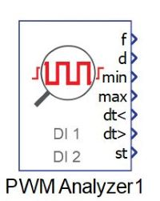
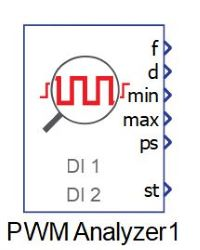
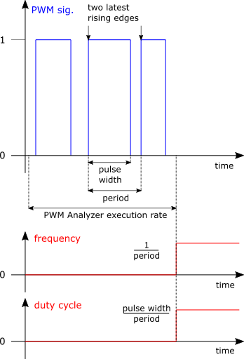
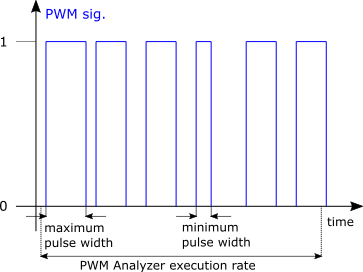
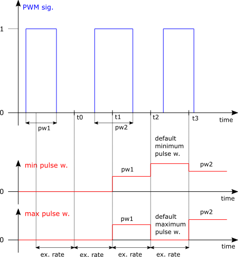
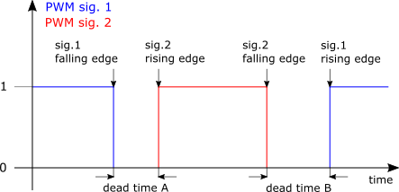
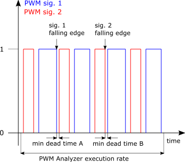
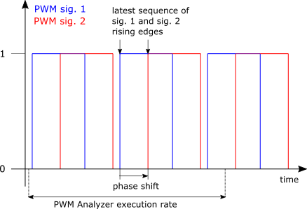

PWM Analyzer
Description of the PWM Analyzer component in Schematic Editor


Description
The PWM Analyzer component extracts features of PWM signals at specified digital inputs. The component is based on a dedicated hardware unit and it operates at the frequency of the device's clock. More information is available in the IO Timing section of each HIL Simulator device's documentation.
Up to two digital input pins can be selected as PWM signal sources. Frequency, duty cycle, and minimum and maximum pulse width durations are captured for each specified signal. Cross-channel analysis can be utilised either for minimum and maximum dead time measurement, or for phase shift analysis. Active logic can be specified for each signal separately.

The PWM Analyzer component shows the frequency and duty cycle in the latest PWM period of the PWM signal. For a non-inverted signal, the period is defined by the interval between two consecutive rising signal edges, and the pulse width is defined by the interval between consecutive rising and falling signal edges. When inverted signals are measured, falling edges are considered instead of rising edges, and vice versa. The interval between each sampling of frequency and duty cycle of a PWM signal is defined by the execution rate of the component. An example of frequency (f) and duty cycle (d) in the latest PWM period of the PWM Analyzer execution rate is illustrated in Figure 1.

The minimum (min) and maximum (max) outputs show the minimum and maximum pulse width durations of a PWM signal which occurred during the execution rate of the component, as illustrated in Figure 2. Comparison of pulse widths is performed after the end of each PWM signal period, and these values are reset at the end of the execution rate with default values.

Figure 3 depicts the minimum and maximum pulse width outputs when the PWM period is in fact longer than the PWM Analyzer execution rate. At time t1, pulse width outputs show the measured pulse width in the first PWM period, and the internal minimum and maximum counters are reset with default values. In the interval between t1 and t2, there are no PWM periods which ended, meaning there are no pulse widths available for comparison with the default values. Therefore, at time t2, pulse width outputs show their default values. The same observation can be made for the dead time extrema.
The default value of maximum pulse width and dead time is 0, while the default value of minimum pulse width and dead time is device dependent, and is given in Table 1.
| HIL402, HIL602+, HIL604 | HIL101 | HIL404, HIL506, HIL606 |
|---|---|---|
| 13.1072 ms | 19.065 ms | 14.9796 ms |

PWM Analyzer considers two separate dead time periods: dead time between the falling edge of the first PWM signal and the rising edge of the second PWM signal (dead time A), and dead time between the falling edge of the second PWM signal and the rising edge of the first PWM signal (dead time B), for two non-inverted signals. An illustration of separate dead time periods can be seen in Figure 4.

Minimum and maximum dead time outputs show the minimum and maximum values of separate dead time periods which appeared during the PWM Analyzer execution rate, as depicted in Figure 5. A comparison of dead time periods is performed after the end of each period of the first PWM signal, and the values of the extrema are reset at the end of the execution rate with default values.

The phase shift (ps) output shows the phase shift between two PWM signals during the latest measured period of the first PWM signal. For two non-inverted signals, the phase shift is measured from the rising edge of the first PWM signal to the succeeding rising edge of the second PWM signal. Shifted PWM signals are depicted in Figure 6.
The status (st) output is available for reporting error occurrences. The purpose of the used bits is given in Table 2. If phase shift analysis is enabled, and the period counter overflow flag or the period counter inactive flag for signals at either of the digital inputs is raised, i.e. if any status bit 0, 1, 4, or 5 is active, then the value of the phase shift is set to 0.
| bit | meaning |
|---|---|
| 0 | Period counter overflow flag is active if the frequency of the PWM signal at digital input pin Input 1 exceeds the allowed range, , . The minimum supported frequency is 10Hz for HIL606 and 100 Hz for other devices. If this flag is raised, then frequency and duty cycle values of the signal at digital input pin Input 1 are set to 0. |
| 1 | Period counter inactive flag is active if the period of the PWM signal at digital input pin Input 1 is 0, . If this flag is raised, then frequency and duty cycle values of the signal at digital input pin Input 1 are set to 0. |
| 2-3 | Reserved. |
| 4 | Period counter overflow flag is active if the frequency of the PWM signal at digital input pin Input 2 exceeds the allowed range, , . The minimum supported frequency is 10 Hz for HIL606 and 100Hz for other devices. If this flag is raised, then frequency and duty cycle values of the signal at digital input pin Input 2 are set to 0. |
| 5 | Period counter inactive flag is active if the period of the PWM signal at digital input pin Input 2 is 0, . If this flag is raised, then frequency and duty cycle values of the signal at digital input pin Input 2 are set to 0. |
| 6-7 | Reserved. |
| 8 | The different frequencies flag is active if both channels are enabled, and the frequencies of two PWM signals at digital inputs Input 1 and Input 2 are different, , if the measured frequencies do not exceed the allowed range, i.e. if the period counter overflow flag for either signal is not raised. |
| 9 | Dead time violation is active if dead time analysis is enabled and both PWM signals are concurrently active. |
| 10-11 | Reserved. |
The PWM Analyzer can be used for simulations running on VHIL by employing the Analog/digital IO loopback option.
Ports
- f (out)
- Frequency(ies) [Hz] of signal(s) at specified digital input pin(s).
- Supported types: real
- Vector support: yes
- The output dimension depends on the number of specified digital inputs. The output is a two element vector if the checkbox Enable second channel is marked, i.e. if two digital inputs are utilized as PWM signal sources. Each element corresponds to one digital input, in sequence. Otherwise, it is a scalar.
- Frequency(ies) [Hz] of signal(s) at specified digital input pin(s).
- d (out)
- Duty cycle(s) [p.u.] of signal(s) at specified digital input pin(s).
- Supported types: real
- Vector support: yes
- The output dimension depends on the number of specified digital inputs. The output is a two element vector if the checkbox Enable second channel is marked, i.e. if two digital inputs are utilized as PWM signal sources. Each element corresponds to one digital input, in sequence. Otherwise it is a scalar.
- Duty cycle(s) [p.u.] of signal(s) at specified digital input pin(s).
- min (out)
- Minimum pulse width duration(s) [s] of signal(s) at specified digital
input pin(s). The port is visible only if the Enable
min and max pulse width outputs checkbox is marked.
- Supported types: real
- Vector support: yes
- The output dimension depends on the number of specified digital inputs. The output is a two element vector if the checkbox Enable second channel is marked, i.e. if two digital inputs are utilized as PWM signal sources. Each element corresponds to one digital input, in sequence. Otherwise it is a scalar.
- Minimum pulse width duration(s) [s] of signal(s) at specified digital
input pin(s). The port is visible only if the Enable
min and max pulse width outputs checkbox is marked.
- max (out)
- Maximum pulse width duration(s) [s] of signal(s) at specified digital
input pin(s). The port is visible only if the Enable
min and max pulse width outputs checkbox is marked.
- Supported types: real
- Vector support: yes
- The output dimension depends on the number of specified digital inputs. The output is a two element vector if the checkbox Enable second channel is marked, i.e. if two digital inputs are utilized as PWM signal sources. Each element corresponds to one digital input, in sequence. Otherwise it is a scalar.
- Maximum pulse width duration(s) [s] of signal(s) at specified digital
input pin(s). The port is visible only if the Enable
min and max pulse width outputs checkbox is marked.
- dt< (out)
- Minimum dead time values [s] of separate dead time periods. The first
value is the minimum of the periods which occur from the falling edge of
the signal at digital input pin Input 1 to the succeeding rising edge of the signal at digital input
pin Input 2. The
second value is the minimum of the periods which occur from the falling edge
of the signal at digital input pin Input 2 to the succeeding rising edge of the
signal at digital input pin Input 1. The port is visible if the second channel
is enabled by marking the Enable
second channel checkbox, and if the property value of Cross-channel analysis is set to Dead time.
- Supported types: real
- Vector support: yes
- The output is a two element vector.
- Minimum dead time values [s] of separate dead time periods. The first
value is the minimum of the periods which occur from the falling edge of
the signal at digital input pin Input 1 to the succeeding rising edge of the signal at digital input
pin Input 2. The
second value is the minimum of the periods which occur from the falling edge
of the signal at digital input pin Input 2 to the succeeding rising edge of the
signal at digital input pin Input 1. The port is visible if the second channel
is enabled by marking the Enable
second channel checkbox, and if the property value of Cross-channel analysis is set to Dead time.
- dt> (out)
- Maximum dead time values [s] of separate dead time periods. The first
value is the maximum of the periods which occur from the falling edge of
the signal at digital input pin Input 1 to the
succeeding rising edge of the signal at digital input pin Input 2. The second
value is the maximum of the periods which occur from the falling edge of
the signal at digital input pin Input 2 to the succeeding rising edge of the
signal at digital input pin Input 1. The port is visible if the second
channel is enabled by marking the Enable
second channel checkbox, and if the property value of Cross-channel analysis is set to Dead time
.
- Supported types: real
- Vector support: yes
- The output is a two element vector.
- Maximum dead time values [s] of separate dead time periods. The first
value is the maximum of the periods which occur from the falling edge of
the signal at digital input pin Input 1 to the
succeeding rising edge of the signal at digital input pin Input 2. The second
value is the maximum of the periods which occur from the falling edge of
the signal at digital input pin Input 2 to the succeeding rising edge of the
signal at digital input pin Input 1. The port is visible if the second
channel is enabled by marking the Enable
second channel checkbox, and if the property value of Cross-channel analysis is set to Dead time
.
- ps (out)
- Phase shift [°] or [rad], between two PWM signals, referenced to the
signal specified at digital input pin Input 1. If Degrees is specified as the angle unit,
phase values are limited to between [
,
]. If Radians is specified as the
angle unit, phase values are limited to between [
,
]. The port is visible if the second channel is enabled by
marking the Enable second channel checkbox, and if the
property value of Cross-channel analysis is set to
Phase shift.
- Supported types: real
- Vector support: no
- Phase shift [°] or [rad], between two PWM signals, referenced to the
signal specified at digital input pin Input 1. If Degrees is specified as the angle unit,
phase values are limited to between [
,
]. If Radians is specified as the
angle unit, phase values are limited to between [
,
]. The port is visible if the second channel is enabled by
marking the Enable second channel checkbox, and if the
property value of Cross-channel analysis is set to
Phase shift.
- st (out)
- Status/error flag.
- Supported types: int
- Vector support: no
- Status/error flag.
General (Tab)
- Input 1
- Digital input pin selection for PWM signal 1: Input 1(1..N), where N is HIL device dependent, and represents the number of DI pins.
- Input 1 logic
- Active logic of the PWM signal at the selected digital input pin Input 1. Available options are active high for non-inverted signals and active low for inverted signals.
- Enable second channel
- When checked, enables utilization of an additional digital input pin, Input 2, for PWM signal analysis.
- Input 2
- Digital input pin selection for PWM signal 2: Input 2(1..N), where N is HIL device dependent, and represents the number of DI pins. This property is available if the Enable second channel checkbox is marked.
- Input 2 logic
- Active logic of the PWM signal at the selected digital input pin Input 2. Available options are active high for non-inverted signals and active low for inverted signals. This property is available if the Enable second channel checkbox is marked.
- Cross-channel analysis
- Cross-channel analysis selection between three options: None, Dead time, and Phase shift. This property is available if the Enable second channel checkbox is marked.
- Angle unit
- Angle unit selection of the phase shift. Available units for the phase shfit output are: Degrees and Radians. This property is available if the Enable second channel checkbox is marked, and Cross-channel analysis is set to Phase shift.
- Execution rate
- Type in the desired signal processing execution rate. This value must be compatible with other signal processing components of the same circuit: the value must be a multiple of the fastest execution rate in the circuit. There can be up to four different execution rates. To specify the execution rate, you can use either decimal (e.g. 0.001) or exponential values (e.g. 1e-3) in seconds. Alternatively, you can type in ‘inherit’ in which case the component will be assigned execution rate based on the execution rate of the components it is receiving input from.